e_pas = -65 (mV)
gbar_h = 0 (S/cm2)
Baseline in voltage is removed.
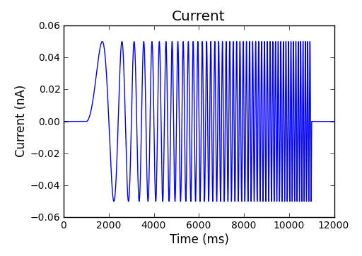 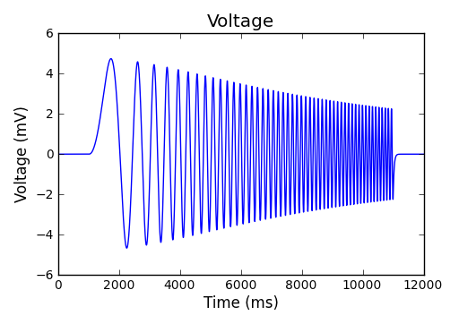
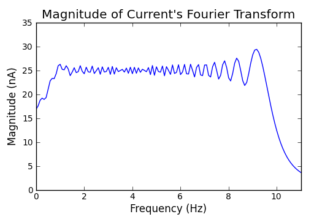
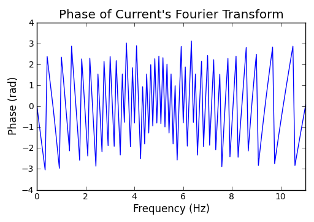 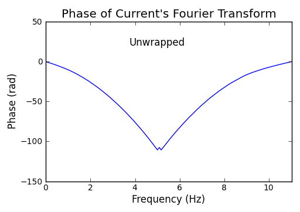
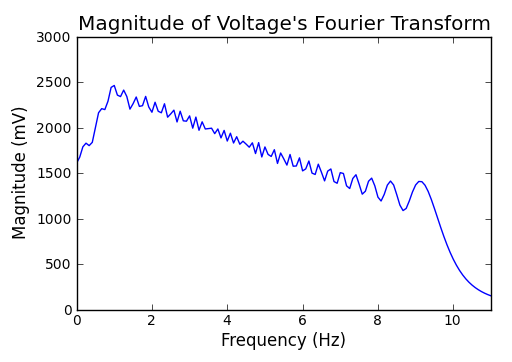
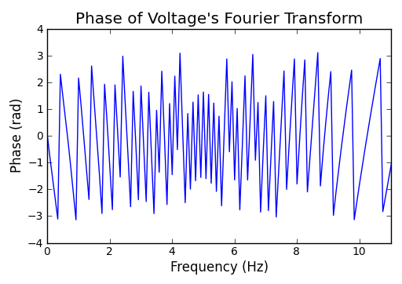 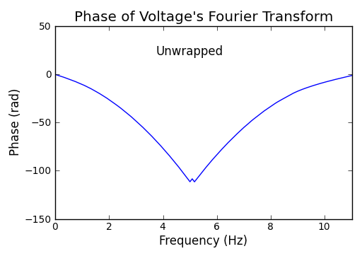
It is surprising that the magnitude profiles of current's and voltage's Fourier transform are zigzag, but
the profile of impedance magnitude is smooth!
Another surprising finding is that the impedance phase is small at lower frequency, but the voltage lag is
large there.
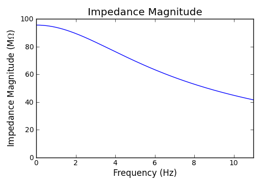
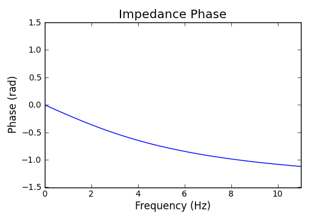 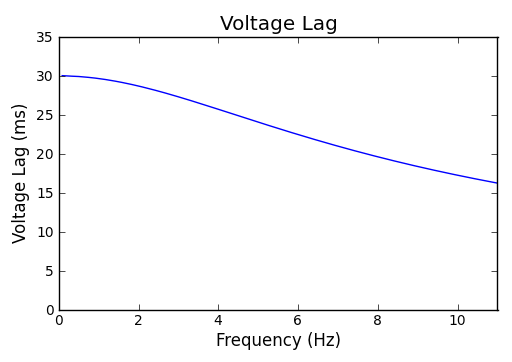